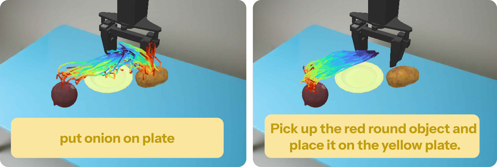
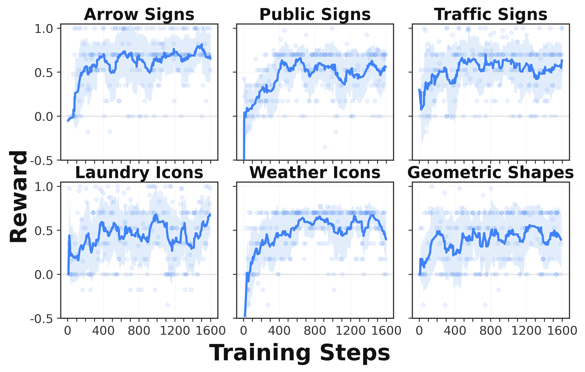
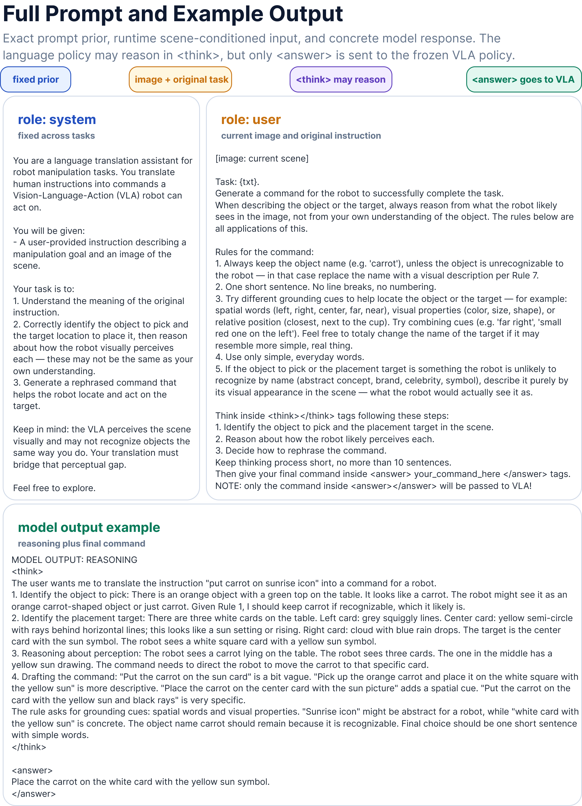
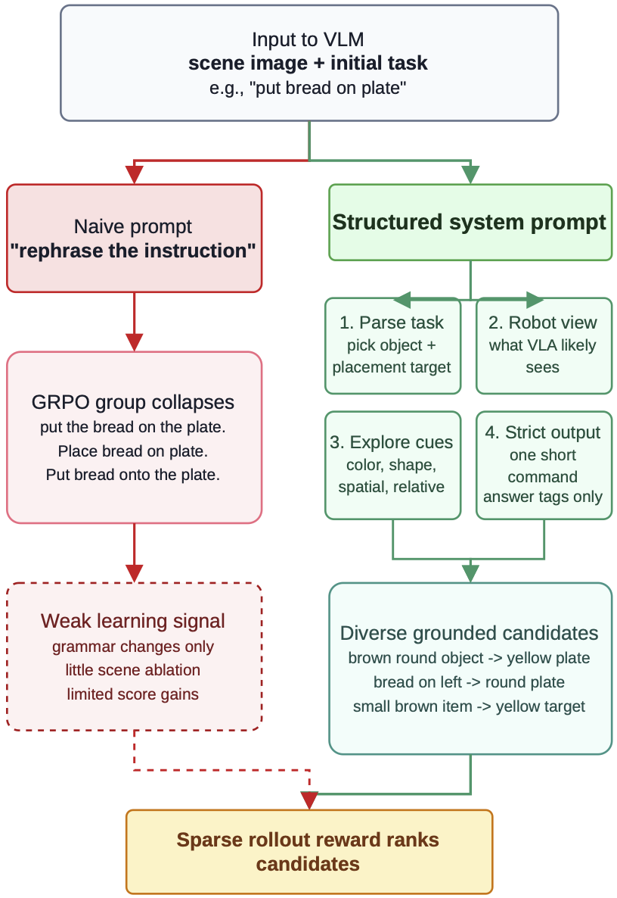

Abstract
Vision-Language-Action (VLA) models are commonly treated as end-to-end action policies conditioned on natural-language task descriptions. In practice, however, their behavior often depends sharply on how the instruction is phrased, suggesting that language is not merely a task label but an optimizable conditioning input. We study whether frozen VLA policies can be improved by optimizing language space rather than updating action weights. Our method introduces a language-conditioning space policy that translates a human instruction into a short VLA-grounded command using object appearance, spatial relations, and target-grounding cues. The language-conditioning space policy is initialized with a failure-derived command-space prior and optimized with reinforcement learning from sparse task-completion rewards, while the downstream VLA remains fully frozen. This yields language-conditioning space optimization: RL discovers which VLA-grounded commands best elicit successful behavior from the frozen action policy. Experiments on RL4VLA and VL-Think show that language-conditioning space optimization improves success on instruction-sensitive, symbolic, and multi-object manipulation tasks, demonstrating that language can serve as an optimizable variable for robot foundation models.
Why Optimize Language?
VLA models often react very differently to semantically equivalent commands. A raw instruction such as put bread on plate can fail even when the object and target are visible, while a grounded rewrite such as pick up the brown round object and put it on the yellow plate can expose the cues the frozen policy needs.
VLA Grounder treats the command as the adaptation variable. Instead of updating the downstream action model, it learns an upstream language-conditioning policy that maps the image and human instruction into a concise command better aligned with the frozen VLA's perceptual and linguistic priors.
Method

Model architecture and training loop. A scene-conditioned language-conditioning policy is inserted before a frozen VLA action policy. During training, only the language policy is optimized from sparse rollout rewards; the VLA weights remain fixed.
For each image-instruction pair, the language-conditioning policy samples candidate commands. The frozen VLA executes a rollout under each command, producing a sparse task-completion reward. GRPO compares rewards within the sampled group and updates only the command-generating policy. At inference time, the system samples one optimized command and runs the frozen VLA normally.
Results
Experiments on VL-Think and RL4VLA show that changing only the language input can substantially improve frozen VLA policies. The gains are especially visible on symbolic VL-Think tasks, where raw target names can be replaced with more visual or spatial command aliases.
| Task | pi0 orig | pi0 + VLA Grounder | OpenVLA orig | OpenVLA + VLA Grounder |
|---|---|---|---|---|
| Arrow | 4.2 | 41.7 | 13.5 | 62.5 |
| Color | 32.3 | 40.1 | 55.7 | 82.8 |
| Laundry | 12.5 | 25.0 | 15.6 | 37.5 |
| Public Info | 9.4 | 43.8 | 21.4 | 65.6 |
| Shape | 12.0 | 43.2 | 27.6 | 74.5 |
| Traffic | 5.7 | 32.3 | 16.7 | 63.0 |
| Weather | 12.0 | 44.8 | 20.3 | 61.5 |
| Average | 12.6 | 38.7 | 24.4 | 63.9 |
Main VL-Think results. Success rates are shown as percentages. All VLA backbones are frozen; only the language-conditioning policy is optimized.
Command Rewrites Change Behavior

Trajectory comparison on RL4VLA MultiObject with frozen pi0. The default command under-specifies the object and causes unstable motion, while the rewritten command adds visible grounding cues and yields a more direct successful trajectory.
Abstract target: replace labels like sunrise icon with visible cues like white card with yellow sun.
Rare object name: replace categories like champagne glass with shape/material cues like tall white glass.
Multi-object ambiguity: add spatial cues such as left yellow plate.
Weak object grounding: replace names like bread with visual cues like brown round object.
Training Dynamics

GRPO training for VL-Think tasks. Each panel reports rollout success rate over training steps for a symbolic grounding category. Upward trends indicate that reward updates to the language-conditioning policy improve command selection while the downstream VLA remains frozen.
Prompt Format

The language policy receives the scene image, original task, and a structured instruction asking it to identify source-object and target cues. Only the final command inside the answer field is passed to the frozen VLA; intermediate reasoning is used only to choose a better command.

BibTeX
@inproceedings{shodievvla,
title={VLA Grounder: Language-Conditioning Space Optimization for Black-Box VLA Models},
author={Shodiev, Damir and Staroverov, Aleksei and Kachaev, Nikita and Kovalev, Alexey and Panov, Aleksandr},
booktitle={Decision-Making from Offline Datasets to Online Adaptation: Black-Box Optimization to Reinforcement Learning}
}